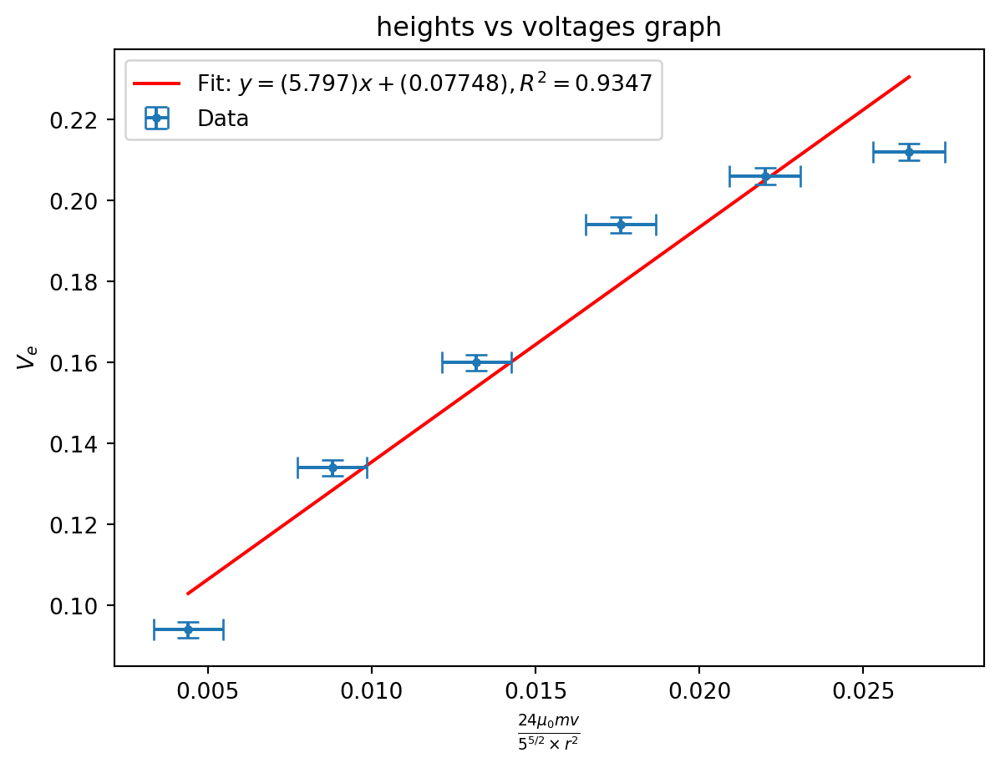
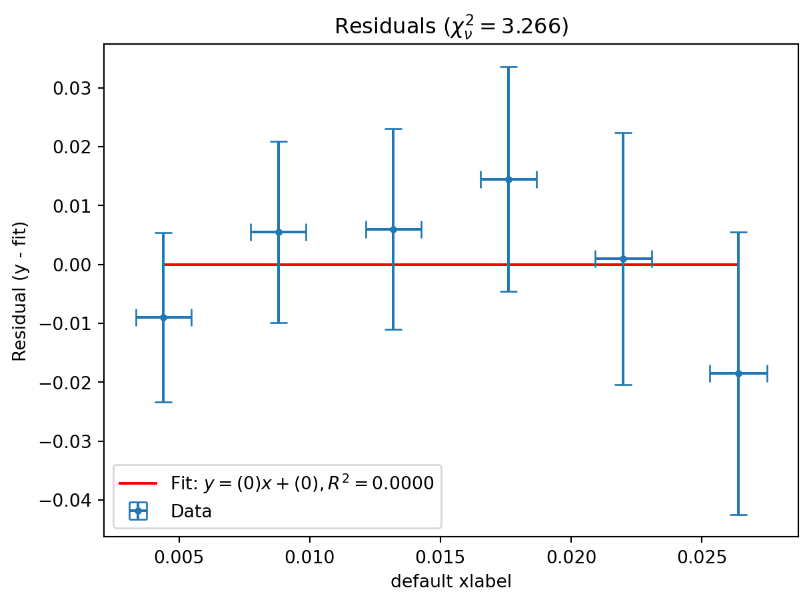
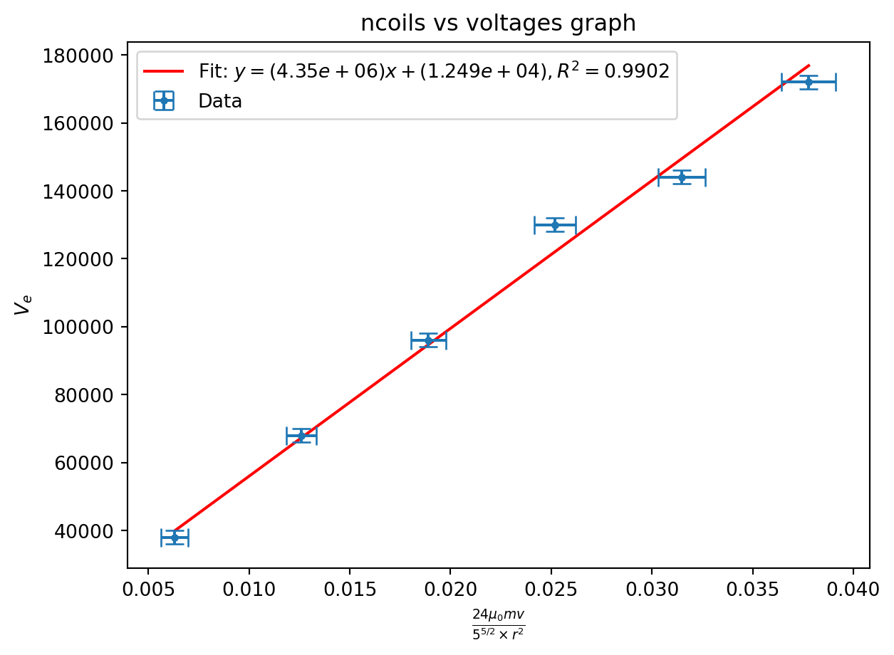
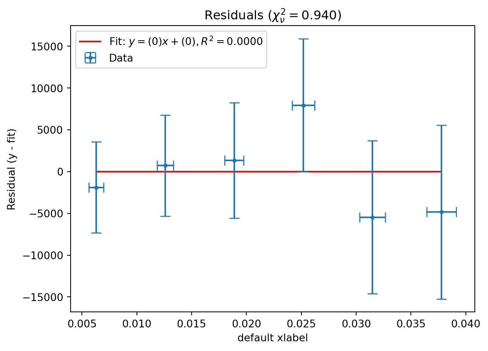
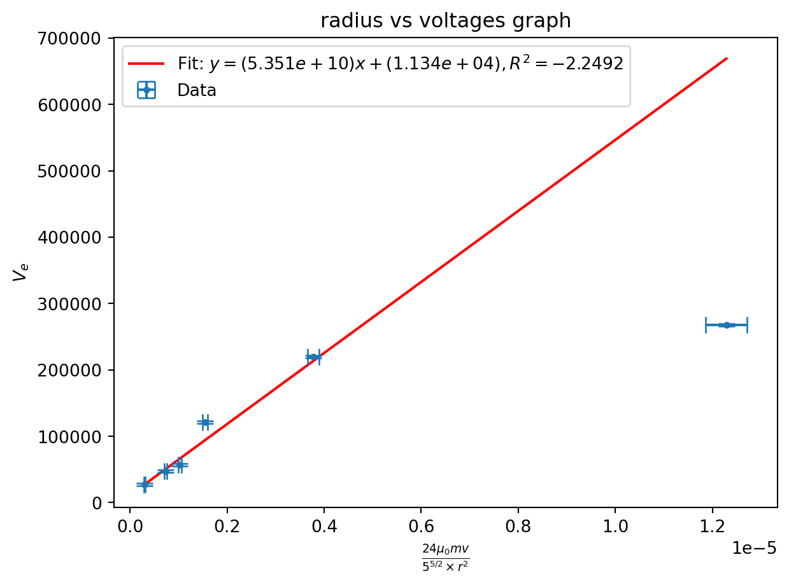
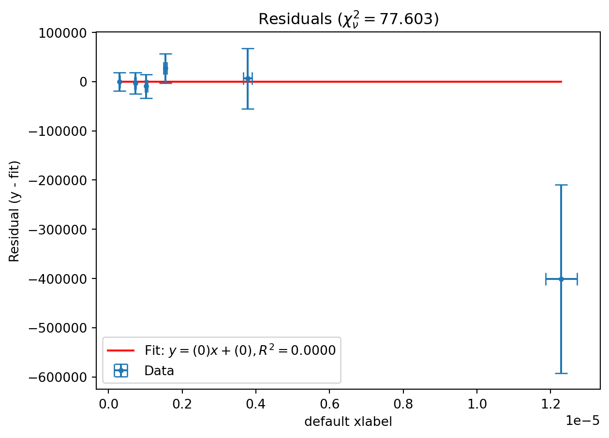
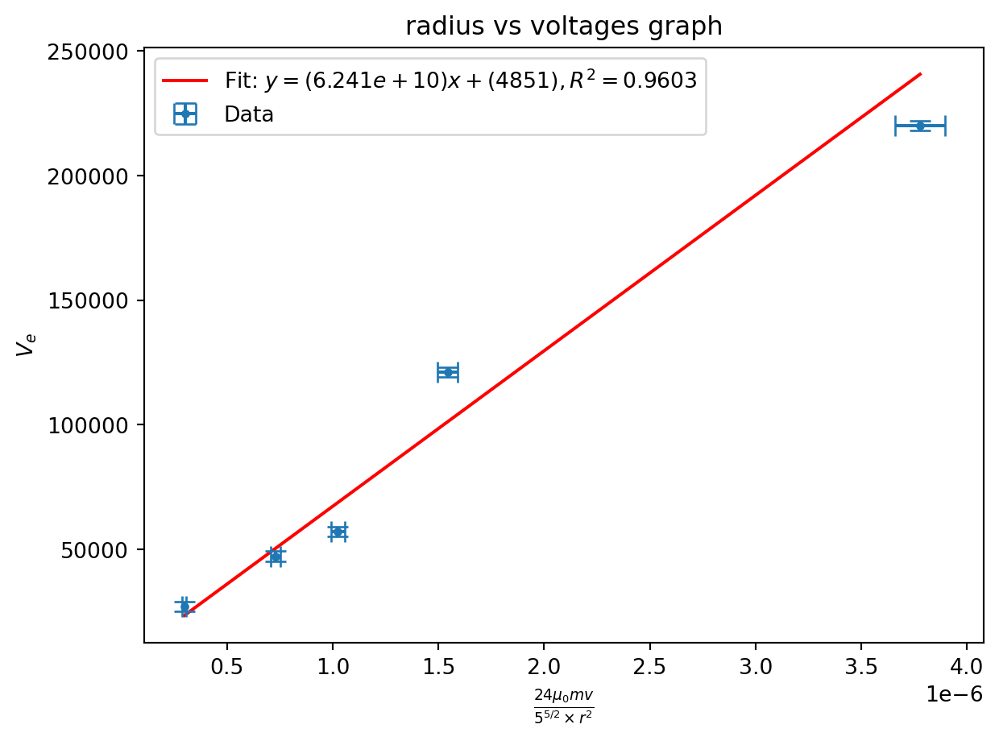
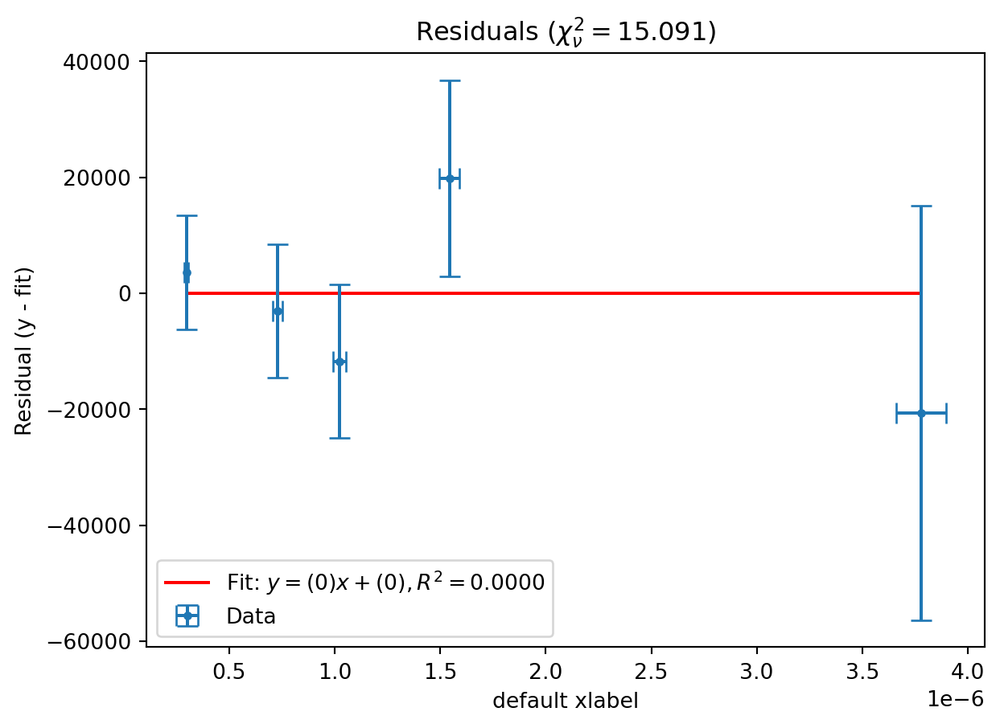

import warnings
from math import pi, sqrt
import matplotlib.pyplot as plt
import numpy as np
from scipy import constants, odr
from uncertainties import UFloat, ufloat
warnings.filterwarnings("ignore", category=FutureWarning, module="uncertainties")
warnings.filterwarnings(
"ignore",
category=FutureWarning,
message=r"AffineScalarFunc\.__abs__\(\) is deprecated",
)
warnings.filterwarnings(
"ignore", category=UserWarning, message="Using UFloat objects with std_dev==0"
)
def fit_odr(x: list[UFloat], y: list[UFloat], zero_intercept: bool = False):
x_nom, x_err = [v.n for v in x], [v.s for v in x]
y_nom, y_err = [v.n for v in y], [v.s for v in y]
data = odr.RealData(x_nom, y_nom, sx=x_err, sy=y_err)
if zero_intercept:
model, beta0 = odr.Model(lambda p, x: p[0] * x), [1]
else:
model, beta0 = odr.Model(lambda p, x: p[0] * x + p[1]), [1, 0]
out = odr.ODR(data, model, beta0=beta0).run()
slope = ufloat(out.beta[0], out.sd_beta[0])
intercept = (
ufloat(out.beta[1], out.sd_beta[1]) if not zero_intercept else ufloat(0, 0)
)
y_pred = model.fcn(out.beta, np.array(x_nom))
ss_res = np.sum((np.array(y_nom) - y_pred) ** 2)
ss_tot = np.sum(
np.array(y_nom) ** 2
if zero_intercept
else (np.array(y_nom) - np.mean(y_nom)) ** 2
)
r_squared = 1 - ss_res / ss_tot
return slope, intercept, r_squared
def compsigma(a, b):
return abs((a.n - b.n) / ((((a.s**2) + (b.s**2)) ** (1 / 2))))
def plot(
x,
y,
fitodr=None,
title="default title",
xlabel="default xlabel",
ylabel="default ylabel",
show=True,
):
if fitodr is None:
fitodr = fit_odr(x, y)
slope, intercept, r_squared = fitodr
plt.figure()
first = x[0].n
last = x[-1].n
plt.plot(
[first, last],
[first * slope.n + intercept.n, last * slope.n + intercept.n],
"r-",
label=f"Fit: $y = ({slope.n:.4g})x + ({intercept.n:.4g}),R^2 = {r_squared:.4f}$",
)
plt.errorbar(
[v.nominal_value for v in x],
[v.nominal_value for v in y],
xerr=[v.std_dev for v in x],
yerr=[v.std_dev for v in y],
capsize=5,
linestyle="none",
marker="o",
markersize=3,
label="Data",
)
plt.title(title)
plt.xlabel(xlabel)
plt.ylabel(ylabel)
plt.legend()
if show:
plt.show()
def plot_residuals(
x,
y,
fitodr=None,
title="Residuals",
xlabel="default xlabel",
ylabel="Residual (y - fit)",
show=True,
):
if fitodr is None:
fitodr = fit_odr(x, y)
slope, intercept, r_squared = fitodr
residuals = [yi - (slope * xi + intercept) for xi, yi in zip(x, y)]
sigma_eff = [
sqrt(yi.std_dev**2 + (slope.n * xi.std_dev) ** 2) for xi, yi in zip(x, y)
]
chi2 = sum((r.nominal_value**2) / (s**2) for r, s in zip(residuals, sigma_eff))
dof = len(y) - 1
chi2_reduced = chi2 / dof
zero_fit = (
ufloat(0, 0),
ufloat(0, 0),
0.0,
) # was None — plot()'s label needs a float
plot(
x,
residuals,
fitodr=zero_fit,
title=f"{title} ($\\chi^2_\\nu = {chi2_reduced:.3f}$)",
xlabel=xlabel,
ylabel=ylabel,
show=show,
)
return chi2_reducedBryce Tabangcura - Lab Week 2
Lab partner: haven bunter-gooley
Preamble
The entire experiment, and all data has been done and interpolated in python, so to start with lets start with the preamble python, this being imports and helper functions. I have 4 helper functions, one to fit a linear fit, one to compare sigma between two values, another to plot and another to plot residuals. the imports and warning stuff can be mostly ignored.
Lets first continue with getting the magnetic dipole moment with the dataset given to us. Start with the data, this is from the data given to us, we are using the small magnet.
z_cm_small = [10, 9.5, 9, 8.5, 8, 7.5, 7, 6.5, 6, 5.5, 5, 4.5, 4, 3.5, 3]
B_small_mT = [
0.234,
0.267,
0.309,
0.345,
0.402,
0.493,
0.542,
0.663,
0.791,
0.98,
1.19,
1.52,
2.05,
2.73,
4.16,
]The paper gives us the following function. \[\frac{\mu_0 m}{2 \pi r^3}=B\] We can rewrite this in the form \[y = mx\] where \(y = B, x = \frac{\mu_0}{2 \pi r^3}, m = m\)
So we do that, we fit a linear graph to it, and our slope, m is what we get as our magnetic dipole moment
And we get a value of around 0.752 for our magnetic dipole moment.
mu_0 = constants.mu_0
zsmall = [mu_0 / ((ufloat(x / 100, 1e-100) ** 3) * 2 * pi) for x in z_cm_small]
bsmall = [ufloat(x, 1e-100) * 1e-3 for x in B_small_mT]
m = fit_odr(zsmall, bsmall)[0].n
print(m)0.7520540206115822Experiment 1
Aim
The aim of this experiment is to investigate the connection between the voltage increase from a solenoid from a changing magnetic field due to a moving magnet and the number of coils in the solenoid.
Method
We start by assembling our main apparatus, We are given a tube, and a stand to fit the tube on, and we reasonably clamp the tube to the stand such that the tube can be as straight as possible. It’s important to be as straight as possible, as gravitational potential energy could be lost to the friction in the tube.
Then we have a empty cylinder to put around the tube, we chose one with a diameter of 2.5cm, after we wrapped a copper coil around the tube 30 times, as we chose 30 to be a solid base. A base too small would be weak data, a base too big would cause problems since we are assuming the coil is a infinitesimally small width. The clamp we are using can act as a stand for the empty cylinder with copper around it, so we can situate the low enough such that when we place the empty cylinder on top of the clamp, the distance from the center of the copper coil is roughly 20 centimeters from the top of the tube, its roughly since the uncertainty is massive, measuring the coils at 30 coil itself is 2.4 cm width, so we choose 1.2 cm as the uncertainty, which is massive.
We then sanded the tips of the coils and connected it to the digital oscilloscope, we then drop the magnet from the top of the tube, and record the peak to peak voltage difference from the digital oscilloscope. change the height of the tube incrementally, using the clamp as the stand, we change where the clamp is relative to the tube to change the height of the tube
Results
The results were recorded in python, specifically a list of tuples, where the first value of the tuple is the number of wraps, and the second value of the tuple is the values for the voltage peaks from the center, so only peak to peak/2
heightvoltagetuples: list[tuple[int, int]] = [
(5, 94),
(10, 134),
(15, 160),
(20, 194),
(25, 206),
(30, 212),
]We do 3 experiments, and we chose base numbers for radius, coil numbers and heights, for this experiment, height is being varied so height isn’t a value, but we are still going to instantiate the variables now.
Lets start with some preamble, We choose a radius base of 2.525cm, and an uncertainty of 0.0125cm, this uncertainty is this low because we used a caliper, and we measured on the caliper in increments of 0.025, so we choose half of that as the uncertainty.
our number of coils base is 30, with no uncertainty (its not a measurement, it just is 30)
our height base is 20cm, with an uncertainty of 1.2, since the coils had a depth of 2.4cm we chose 1.2 as half that (the assumption is that the coil has a center, which it doesnt have.)
and gravity is ~9.79 in canberra.
radius_base = ufloat(2.525, 0.0125) / 100
n_base = 30
height_base = ufloat(20, 1.2) / 100
g = 9.79Equation time. in the paper we are given the voltage at one extreme as
\[V_e = \frac{24\mu_0 m v}{5^{5/2}\times r^2}\]
Doing some simple algebra \[1/2 mv^2 = mgh\] \[v = \sqrt{2gh}\] \[V_e = \frac{24\mu_0 m \sqrt{2gh}}{5^{5/2}\times r^2}\] So we can do y = mx here where \(y = x\)
We also choose an uncertainty for the height of 1.5cm, since the coil center has a width 2.4 cm, we choose half that, so the uncertainty in the height of the coil is the uncertainty in our height.
The voltage uncertainty is 1/2 the smallest measurement increment of the oscilloscope, which in our case was 2mv
heights = [
25 * mu_0 * m * n_base * sqrt(2 * g) / ((5 ** (5 / 2)) * (radius_base**2)) * v
for v in [ufloat(i[0], 1.2) / 100 for i in heightvoltagetuples]
] # m
voltages = [ufloat(i[1], 2) * 1e-3 for i in heightvoltagetuples] # VWe can plot this
::: {#cell-heights vs voltages graph .cell execution_count=7}
plot(heights, voltages, title="heights vs voltages graph", ylabel=r"$V_e$", xlabel=r"$\frac{24\mu_0 m v}{5^{5/2}\times r^2}$")
:::
And we can plot and print the chi squared value
::: {#cell-heights vs voltages residualgraph .cell execution_count=8}
print(plot_residuals(heights, voltages))
3.265811675853243:::
Conclusions
We get a reduced chi squared value of 2, which ideally is a bad value, since it is above 1, but it is not greatly above 1. Considering the actual amount of data we have, I’d say that 2 is fine,
Our plot also looks reasonable and our residual plot works, so it does work.
Arguably our data is in agreement with the equation.
But at the same time, our chi squared is >1, meaning there is a problem.
Experiment 2
Aim
The aim of this experiment is to investigate the connection between the voltage increase from a solenoid from a changing magnetic field due to a moving magnet and the velocity of the magnet.
Method
The method is almost the exact same, get to the base point as experiment 1, but instead of changing the clamp height we recoil the wire each time, and we repeat this in increments of 5 coils.
Results
Once again results recorded in python
A list of tuples, where the
ncoilvoltagetuples: list[tuple[int, int]] = [
(5, 38),
(10, 68),
(15, 96),
(20, 130),
(25, 144),
(30, 172),
]Doing the same y = x thing, we can get y and x.
We choose the voltage uncertainty ot be the same mV, and the ncoil uncertainty to be 0.5, since we measure coils in increments of 1, we choose half that as the uncertainty. Originally we planned on 0, but we added the uncertainty just to be safe.
ncoils = [
24
* mu_0
* m
* ((2 * g * height_base) ** (1 / 2))
/ (5 ** (5 / 2) * (radius_base**2))
* n
for n in [ufloat(x[0], 0.5) for x in ncoilvoltagetuples]
]
voltages = [ufloat(i[1], 2) * 1e3 for i in ncoilvoltagetuples] # VWe can plot this
::: {#cell-ncoils vs voltages graph .cell execution_count=11}
plot(ncoils, voltages, title="ncoils vs voltages graph", ylabel=r"$V_e$", xlabel=r"$\frac{24\mu_0 m v}{5^{5/2}\times r^2}$")
:::
And we can plot and print the chi squared value
::: {#cell-ncoils vs voltages residualgraph .cell execution_count=12}
print(plot_residuals(ncoils, voltages))
0.9402183680487235:::
Experiment 3
This is good, we have a chi squared value of <1. meaning that our data agrees with the equations.
Aim
The aim of this experiment is to investigate the connection between the voltage increase from a solenoid from a changing magnetic field due to a moving magnet and the radius of the solenoid.
Method
This method is similar/ the sames as method 1, as we recoil into a different diameter cyclinder multiple times, keeping the same amount of coils.
Results
Doing the same things as before, skipping some of the preamble
Choosing the very same 2mv uncertainty for voltage, and using 0.0125 radius uncertainty, since we used calipers to measure all of the diameters.
diametervoltagetuples: list[tuple[float, float]] = [
(9.0, 27),
(5.75, 47.2),
(4.85, 57),
(3.95, 121), # pm 0.025
(2.525, 220),
(1.4, 268),
]
diameters = [
# 1 / (((ufloat(i[0], 0.05) * 1e-2)) ** (1/2)) for i in diametervoltagetuples
24
* mu_0
* m
* n_base
* ((2 * g * height_base) ** (1 / 2))
/ (5 ** (5 / 2) * (r**2))
for r in [ufloat(i[0], 0.0125) for i in diametervoltagetuples]
] # m
voltages = [(ufloat(i[1], 2) * 1e3) for i in diametervoltagetuples] # VThen we plot it
::: {#cell-radius vs voltages graph .cell execution_count=14}
plot(diameters, voltages, title="radius vs voltages graph", ylabel=r"$V_e$", xlabel=r"$\frac{24\mu_0 m v}{5^{5/2}\times r^2}$")
:::
And we can plot and print the chi squared value
::: {#cell-radius vs voltages residualgraph .cell execution_count=15}
print(plot_residuals(diameters, voltages))
77.60344954939748:::
Conclusions
This is really bad, our chi squared value is extremelly high, One extremelly noticable datapoint from the graph is the last one.
This was the coil wrapped directly onto the tube.
The idea is, that because voltage changes are inversely squared proportional, the values closest are subject to the biggest fluctuations. Removing it shows better results.
diametervoltagetuples: list[tuple[float, float]] = [
(9.0, 27),
(5.75, 47.2),
(4.85, 57),
(3.95, 121), # pm 0.025
(2.525, 220),
# (1.4, 268),
]
diameters = [
# 1 / (((ufloat(i[0], 0.05) * 1e-2)) ** (1/2)) for i in diametervoltagetuples
24
* mu_0
* m
* n_base
* ((2 * g * height_base) ** (1 / 2))
/ (5 ** (5 / 2) * (r**2))
for r in [ufloat(i[0], 0.0125) for i in diametervoltagetuples]
] # m
voltages = [(ufloat(i[1], 2) * 1e3) for i in diametervoltagetuples] # V
plot(diameters, voltages, title="radius vs voltages graph", ylabel=r"$V_e$", xlabel=r"$\frac{24\mu_0 m v}{5^{5/2}\times r^2}$")
print(plot_residuals(diameters, voltages))

15.091432859475944And we still get a chi reduced value of 15.
This is the weakest data out of the three experiments we ran.
We ran this experiment twice to see better results but both of them showed similar problems.
Our value doesn’t agree with the equation,
It’s highly likely this is due to that same problem where errors can compound faster at lower radii.